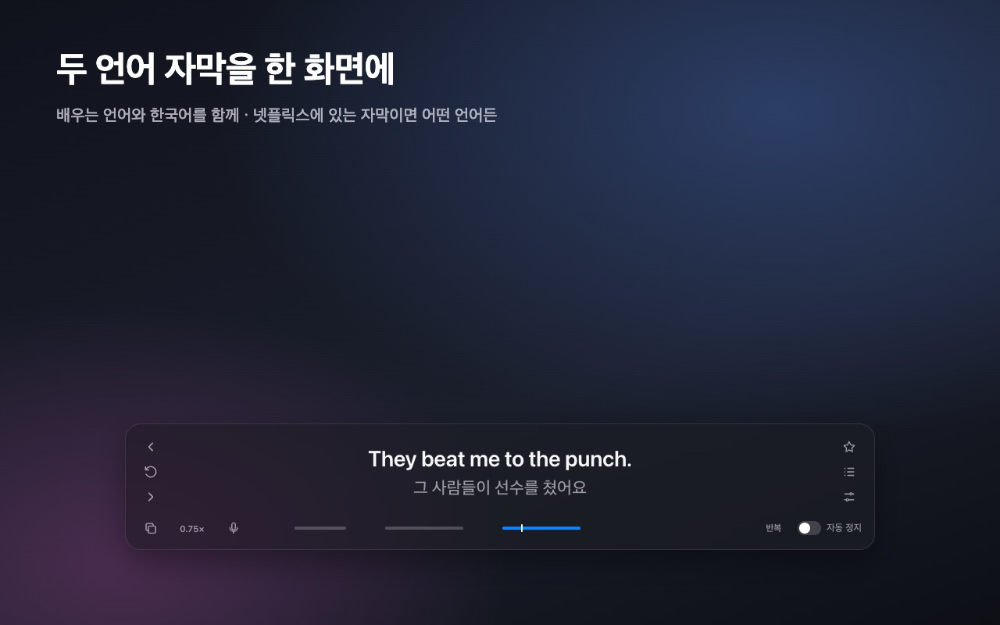

 Shadowmate크롬 웹 스토어 넷플릭스를 두 언어 자막으로 보면서 외국어 쉐도잉을 하는 크롬 확장이에요. 한 문장씩 멈추고, 반복하고, 느리게 듣고, 내 발음을 녹음해 원어민과 비교해요. 단어를 누르면 뜻이 나오고 Anki로 내보낼 수 있어요. Chrome 확장JavaScript한국어 · English 스토어에서 설치 소스 코드
길눈프로토타입 시각장애인을 위한 카메라 보행 보조 앱이에요. 앞에 있는 장애물·차량·사람의 방향과 위험도를 음성으로 알려 주고, 표지판이나 메뉴의 글자를 읽어 줘요. iOS 앱은 서버 없이 기기 안에서 모두 분석해요. iOS · AndroidCore ML · YOLOOCR 소스 코드
다음열차TestFlight 테스트 중 애플워치에서 타려는 열차가 몇 분 뒤에 오는지만 보여 주는 앱이에요. 역과 방향을 한 번 고르면 서울 지하철 실시간 도착 정보로 초 단위 카운트다운을 해요. watchOSSwiftUI
PencilNote개발 중 가벼운 iPad 필기 앱이에요. 애플 메모 같은 필기감으로 PDF 위에 쓰고, 필기를 층으로 나누고, 노트를 폴더째 백업해요. 기능을 쌓기보다 쓰기 편한 데 집중하고 있어요. iPadOSPencilKit · PDFKit
MacStatus직접 쓰는 중 메뉴 막대에서 CPU·GPU·메모리·온도를 보는 맥 앱이에요. 항상 켜 두는 앱이라 CPU를 거의 쓰지 않게 다듬었어요. macOSAppKit · SwiftUI